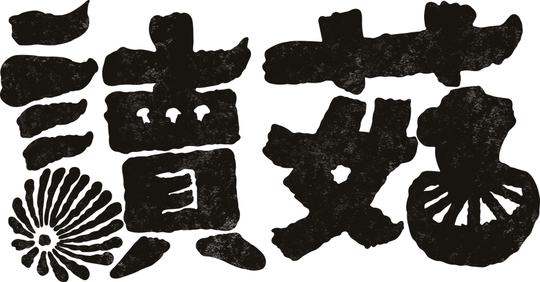
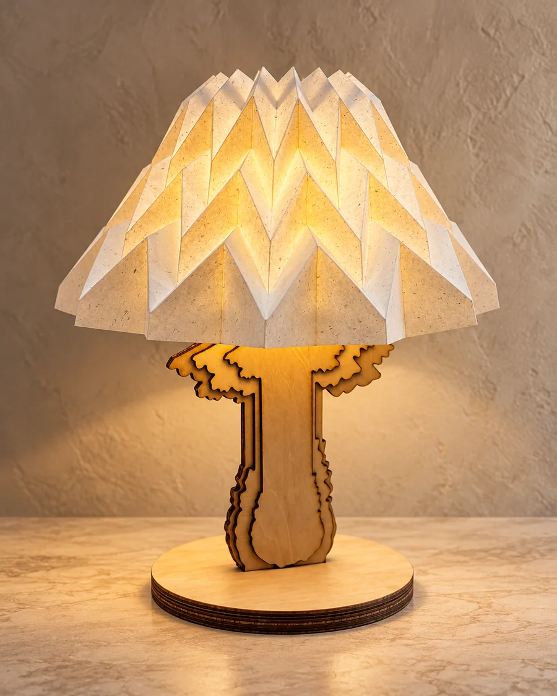

02 ・ Coaster ・ 10 款
菌褶杯墊
把菌傘翻過來，就是一張杯墊。放射狀的菌褶以雷射雕刻在透明壓克力上，外輪廓沿著菌傘邊緣切割；每天放杯子的時候，都順便讀一次菇。

10 款菌褶每一款對應一種毒菇。滑過去讓杯墊轉一圈，點一下認識這朵菇。
＊ 款式以組員定稿為準。


TAIWAN POISONOUSProducts ・ 讀菇生活物件
翻開菌傘，底下放射狀的菌褶每一種都不一樣。我們把它摺成燈、刻成杯墊、印上隨身小卡——讓毒菇知識不再只躺在書裡。

01 ・ Lamp ・ 4 款
以台灣野外常見的毒蘑菇為靈感，用摺紙結構重現放射狀的菌褶。光線穿透紙材時，毒菇神秘又迷人的樣子就浮現出來——一盞兼具觀賞與教育意義的生活燈飾。
試試左邊的開關，看光穿過菌褶的樣子。
02 ・ Coaster ・ 10 款
把菌傘翻過來，就是一張杯墊。放射狀的菌褶以雷射雕刻在透明壓克力上，外輪廓沿著菌傘邊緣切割；每天放杯子的時候，都順便讀一次菇。
＊ 款式以組員定稿為準。
03 ・ Acrylic Card ・ 19 款
一張一種毒菇：手繪全身像、菌褶線稿、特徵標註，底部是毒性類型與誤食症狀。透明壓克力不怕雨，帶上山，遇到菇時拿出來對照——然後，不要採。